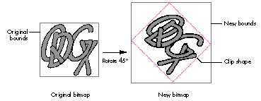

Besides letting you do a lot of cool things with geometric shapes and typography,
QuickDraw GX has useful tools for manipulating bitmaps. For example, bitmap shapes
(the QuickDraw GX counterpart to pixMaps) can be skewed, rotated, and scaled, and
transforms allow these operations to be performed repeatedly without data loss.
Bitmap shapes can share image data, can be used to clip other shapes, and can reside on
disk instead of in memory. This article tells how you can use QuickDraw GX to improve
the way you handle bitmapped graphics.
New users of QuickDraw GX will probably start by going throughInside Macintosh:
QuickDraw GX Objects or the article "Getting Started With QuickDraw GX" indevelop
Issue 15. If you're mainly a QuickDraw programmer, however, you may have a lot of
questions about how QuickDraw GX applies specifically to bitmaps -- probably the
most commonly used graphic objects. As it turns out, it can do most anything
QuickDraw can do, and quite a few useful and exotic new things besides.
If you have at least a nodding familiarity with QuickDraw GX, this article will give
useful tips on how to apply your knowledge to bitmap shapes. If you're a QuickDraw GX
neophyte, this article will confuse you from time to time, but you may learn enough to
decide to make the leap to QuickDraw GX.
It takes about the same information to create a bitmap shape in QuickDraw GX as it does
to make a pixMap in QuickDraw. The biggest difference is that while QuickDraw insists
that you calculate the size of the image buffer and allocate it explicitly, QuickDraw GX
can optionally allocate it for you when the shape is created. This is illustrated in the
code in Listing 1, which creates an indexed bitmap shape.
For indexed pixelSize values (1, 2, 4, or 8), you set the gxBitmap's space field to
gxIndexedSpace and its set field to a color set (the QuickDraw GX equivalent of a
QuickDraw color table) with an appropriate number of entries. Direct pixelSize
values (16 or 32) require that the set field be nil. Forexample, to make the routine in
Listing 1 create a 16-bit bitmap shape, you would set the gxBitmap's space field to
gxRGB16Space and its set field to nil.
Listing 1. Creating an indexed bitmap shape
gxShape CreateIndexedBitmapShape(long horiz, long vert,
long targetDepth)
{
gxBitmap bitShapeInfo;
gxColorSet targetSet;
gxShape resultShape;
if ((horiz <= 0) || (vert <= 0))
return nil;
if (targetDepth > 8)
return nil;
// Create a familiar "color" gxColorSet.
// (The default gxColorSet is a gray ramp.)
targetSet = GetStandardColorSet(targetDepth);
if (targetSet == nil)
return nil;
// Let QDGX calculate the image buffer block size and
// allocate it.
bitShapeInfo.image = nil;
bitShapeInfo.rowBytes = 0;
bitShapeInfo.width = horiz;
bitShapeInfo.height = vert;
bitShapeInfo.pixelSize = targetDepth;
bitShapeInfo.space = gxIndexedSpace;
bitShapeInfo.set = targetSet;
// Use the default color profile.
bitShapeInfo.profile = nil;
resultShape = GXNewBitmap(&bitShapeInfo, nil);
return resultShape;
}
Note that the gxBitmap's rowBytes is a long, not a short as in QuickDraw. This means
no more convoluted rowByte hacks, no more magic bits needed for flags, and no more
unreasonable limits on image width.
Note also that the gxBitmap contains a profile field, a reference to a gxColorProfile
(essentially an object with ColorSync data wrapped inside). If this field is nil,
QuickDraw GX uses its default profile. Color matching occurs only when the target
view port has the gxEnableMatchPort attribute set -- by default, it's off.
Once a bitmap shape is created, you can access and change its characteristics with
GXGetBitmap and GXSetBitmap.
GXGetBitmap(targetShape, &bitmapInfo, &origin); // Alter the necessary gxBitmap fields here. . . . GXSetBitmap(targetShape, &bitmapInfo, &origin);
GXSetBitmap is similar to QuickDraw's UpdateGWorld; it lets you change bitmap depth,
color specification, and size. To change specific attributes, you may need to modify a
combination of fields.
To change a bitmap's width or height, set the width or height field. If QuickDraw GX
originally allocated the image buffer, you can set rowBytes to 0 and the image field to
nil, and QuickDraw GX will reallocate the buffer. If you allocated the buffer yourself,
you'll have to maintain it yourself.
An image isn't scaled when you change size this way. If you increase the width or
height, the new areas contain undefined values; if you decrease them, the image is
truncated. Bitmap scaling is discussed later in this article.*
To change a bitmap's pixel depth, set the pixelSize field to the desired depth. If the
bitmap needs a new color set (which it will, unless the new depth is greater than 8
bits), create it and assign it to the set field. An example that changes the depth to 4-bit
is shown in Listing 2.
To change a bitmap's color characteristics, just change the set, space, and profile
fields. No changes to pixel data will occur -- all pixel values will be interpreted in the
new color set. To transform pixel values, you'd need to set up a new bitmap shape and
draw the existing bitmap into it. (The offscreen library routine CopyToBitmaps is
ideal for this.)
Listing 2. Changing the depth of a bitmap shape
void ChangeDepthToFour(gxShape bitmapShape)
{
gxBitmap imageInfo;
if ((bitmapShape != nil) &&
(GXGetShapeType(bitmapShape) == gxBitmapType))
{
GXGetBitmap(bitmapShape, &imageInfo, nil);
if (imageInfo.pixelSize != 4)
{
imageInfo.pixelSize = 4;
imageInfo.space = gxIndexedSpace;
imageInfo.set = GetStandardColorSet(4);
GXSetBitmap(bitmapShape, &imageInfo, nil);
}
}
}
USING DISK-BASED PIXEL IMAGES
QuickDraw GX provides support for disk-based bitmap shapes. They're structurally
the same as regular bitmaps, except that their image data is contained in a file, so
they're always drawn from disk. Ten calls to GXDrawShape(diskBitmap) means
QuickDraw GX reads the entire file from disk ten times. (QuickDraw GX can't assume
that you didn't write into the file between accesses.) The idea is that the file system's
disk caches will do the work; if the file wasn't changed, subsequent reads should be
cached.
Make sure the file size is at least as large as the bitmap, or you'll get an
"unexpected end of file" error. *
Disk-based bitmaps have limitations. For one thing, certain routines can't be
performed on them -- GXSetShapePixel, for example. (SeeInside Macintosh:
QuickDraw GX Graphics for the complete list.) You can't use disk-based bitmap shapes
as drawing destinations. If you draw into the data you trigger an error. So how do you
create a disk-based bitmap? As shown in Listing 3, you first set the gxBitmap's image
field to gxBitmapFileAliasImageValue. After creating the bitmap shape, create a tag of
type gxBitmapFileAliasTagType containing an alias record that references the file
containing the target raster data and attach it to the shape.
ACCESSING IMAGE DATA
You can manipulate the image data of bitmap shapes directly. If the image data is
maintained by your application, all you have to do is call GXChangedShape afterward. If
the image data was allocated by QuickDraw GX, it's more complicated:
Listing 3. Creating a disk-based bitmap
gxShape CreateDiskBitmap(FSSpec *fsData, gxBitmap *targetBM)
{
gxBitmap localBM;
gxShape targetShape;
gxTag targetTag;
if ((fsData == nil) || (targetBM == nil))
return nil;
targetShape = nil;
targetTag = CreateBitmapAliasTag(fsData, 0L);
if (targetTag != nil)
{
localBM = *targetBM;
localBM.image = gxBitmapFileAliasImageValue;
targetShape = GXNewBitmap(&localBM, nil);
if (targetShape != nil)
GXSetShapeTags(targetShape, gxBitmapFileAliasTagType,
1L, -1L, 1L, &targetTag);
GXDisposeTag(targetTag);
}
return targetShape;
}
gxTag CreateBitmapAliasTag(FSSpec *bitmapFS,
unsigned long fileOffset)
{
struct gxBitmapDataSourceAlias *aliasRecordPtr;
gxTag targetTag;
FSSpec targetFS;
AliasHandle aliasHdl;
OSErr iErr;
long aliasSize, aliasRecordSize;
Boolean wasChanged;
targetTag = nil;
aliasHdl = nil;
aliasRecordPtr = nil;
// Create an alias and resolve it.
iErr = NewAlias(nil, bitmapFS, &aliasHdl);
if (iErr == noErr)
iErr = ResolveAlias(nil, aliasHdl, &targetFS, &wasChanged);
// Build up a compact representation for inclusion into a gxTag.
if (iErr == noErr)
{
aliasSize = GetHandleSize((Handle)aliasHdl);
aliasRecordSize = aliasSize + 2 * sizeof(long);
aliasRecordPtr = (struct gxBitmapDataSourceAlias*)
NewPtr(aliasRecordSize);
iErr = MemError();
}
// Create the gxTag.
if (iErr == noErr)
{
// Create a gxBitmapDataSourceAlias with specified fileOffset
// and appropriate aliasRecordSize and aliasRecord.
aliasRecordPtr->fileOffset = fileOffset;
aliasRecordPtr->aliasRecordSize = aliasSize;
BlockMove(*aliasHdl, &aliasRecordPtr->aliasRecord[0],
aliasSize);
targetTag = GXNewTag(gxBitmapFileAliasTagType,
aliasRecordSize, aliasRecordPtr);
}
// Clean up.
if (aliasHdl != nil)
DisposeHandle((Handle)aliasHdl);
if (aliasRecordPtr != nil)
DisposePtr((Ptr)aliasRecordPtr);
return targetTag;
}
GXLockShape loads an image into memory, so it might not succeed if there isn't enough
memory. And don't forget to check a bitmap shape's space field before processing the
shape -- don't assume that bitmap images are always in RGB space.
See Listing 4 for an example of changing a bitmap shape's data directly.
MEMORY ISSUES
Raster surfers and Photoshop junkies know that raster images can be memory hogs;
it's easy to run out of application heap when you allocate them. So what happens when
QuickDraw GX runs out of memory? It doesn't. Well, almost never. Here are the steps
it will go through, in order, to deliver the memory you need:
Most QuickDraw developers resort to some sort of GrowZoneProc to handle a tight
application heap. QuickDraw GX provides a tiered response to abnormal occurrences.
Items 1 through 4 above return notices (in the debugging version of QuickDraw GX);
item 5 returns an error. All you have to do is implement a routine to handle the
notices and errors.
Listing 4. Directly changing an indexed bitmap shape
void InvertBitmapShape(gxShape sourceBits)
{
gxBitmap sourceInfo, *sourceInfoRef;
gxShapeAttribute curAttributes;
unsigned char *sourcePtr, *rowPtr;
long sourceRowSize, structLen, i, j;
Boolean isQDGXImage;
// Make sure that this is an indexed bitmap shape.
if (sourceBits == nil)
return;
if (GXGetShapeType(sourceBits) != gxBitmapType)
return;
GXGetBitmap(sourceBits, &sourceInfo, nil);
if (sourceInfo.pixelSize > 8)
return;
if (sourceInfo.image == gxBitmapFileAliasImageValue)
return;
// If the image data was allocated by QuickDraw GX...
isQDGXImage = (sourceInfo.image == nil);
if (isQDGXImage)
{
// Load and lock the image data.
curAttributes = GXGetShapeAttributes(sourceBits);
if (!(curAttributes & gxDirectShape))
GXSetShapeAttributes(sourceBits,
curAttributes | gxDirectShape);
GXLockShape(sourceBits);
if (GXGraphicsError(nil) != 0)
return;
// Get a reference to the image data.
sourceInfoRef =
(gxBitmap*)GXGetShapeStructure(sourceBits, &structLen);
if ((sourceInfoRef == nil) || (structLen < sizeof(gxBitmap)))
return;
sourceInfo = *sourceInfoRef;
}
// Invert index values, one row at a time.
sourcePtr = (unsigned char*)(sourceInfo.image);
for (i = sourceInfo.height; i > 0; i--)
{
rowPtr = sourcePtr;
sourceRowSize = sourceInfo.rowBytes;
while (sourceRowSize-- > 0)
{
*rowPtr = ~*rowPtr;
rowPtr++;
}
// Skip to the next row.
sourcePtr = (unsigned char*)sourcePtr + sourceInfo.rowBytes;
}
GXChangedShape(sourceBits);
if (isQDGXImage)
{
GXUnlockShape(sourceBits);
GXSetShapeAttributes(sourceBits, curAttributes);
}
}
One of the niftiest features of QuickDraw GX is the ability to perform geometric
operations on bitmap shapes. Most of the operators that apply to geometric shapes also
apply to bitmaps: rotate, scale, skew, perspective, and clip. In comparison, QuickDraw
provides only three geometric operators: scale, clip, and mask.
ALTERING THE TRANSFORM VERSUS THE GEOMETRY
When you change a bitmap shape's geometry (that is, its actual pixel data), whether
by rotating, skewing, applying perspective, or scaling, you normally lose image data
-- it's often impossible to return the image to its pristine state.
You can eliminate this data loss by instead applying geometric operators to a
shape'stransform. A shape can make use of a 3 x 3 matrix to mathematically change
its appearance when rendered without changing the underlying data. This is especially
important for bitmaps. Figure 2 shows both possibilities of multiple rotations of a
bitmap.
Figure 2. Successive rotations of a bitmap
Rotation, translation (change in origin), skew, perspective, and scale operations can
all be performed on transforms directly, by GXRotateTransform, GXSkewTransform,
and so forth, or indirectly, using the gxMapTransformShape attribute.
When a shape's gxMapTransformShape attribute is set, geometric operations
automatically apply to its transform rather than its geometry. Bitmap and picture
shapes default to having this attribute set; other shapes begin with it off. This means
that if you convert a polygon shape (for example) to a bitmap shape, the
gxMapTransformShape attribute won't automatically be set.

Figure 3. Effect of GXRotateShape on bitmap geometry
When a QuickDraw GX routine modifies a bitmap shape's geometry, a clip shape is
often attached to define the geometric extent of the modified bitmap. More often than
not, the bitmap's image buffer is expanded, as shown in Figure 3. Rotating a bitmap's
geometry can increase its memory requirements by over 40%.
ROTATION
There aren't many QuickDraw programmers who haven't wished for a simple way to
rotate bitmaps. GXRotateShape takes parameters for the target shape, degrees
clockwise to rotate, and center point of rotation, as shown in Listing 5.
Listing 5. Rotating a bitmap shape
void RotateBitmap(gxShape targetShape, Fixed theta)
{
gxBitmap targetBM;
gxPoint origin, shCenter;
// Determine the bitmap shape's current center point.
GXGetBitmap(targetShape, &targetBM, &origin);
shCenter.x = ff(targetBM.width) / 2 + origin.x;
shCenter.y = ff(targetBM.height) / 2 + origin.y;
// Rotate it around its center point.
GXRotateShape(targetShape, theta, shCenter.x, shCenter.y);
}
SKEWING AND PERSPECTIVE
Skewing and perspective are just as much fun as rotation, and even more useful as
general-purpose graphic effects. The code in Listing 6 illustrates a simple type of
perspective; Figure 4 shows the results of this perspective mapping.
SCALING
You can expand or shrink bitmap shapes, like other shape types, with GXScaleShape.
QuickDraw pixMaps are scaled by setting the destination rectangle passed to CopyBits,
whereas GXScaleShape uses a scaling factor. To convert your QuickDraw bitmap scaling
code into the equivalent QuickDraw GX code, you have to calculate this scaling factor.
Listing 7 shows how.
You can flip a bitmap horizontally or vertically by using negative scaling values.
*
Listing 6. Applying perspective to a bitmap shape
void TrapezoidalWarp(void)
{
gxShape bitsShape, warpShape;
long trapezoidData[] =
{
1L, 4L,
ff(130), ff(100), ff(170), ff(100),
ff(200), ff(200), ff(100), ff(200)
};
bitsShape = CreateBasicBitmapShape();
warpShape = GXNewShapeVector(gxPolygonType, trapezoidData);
if (warpShape != nil)
{
ShapeSetPolyMap(bitsShape, warpShape);
GXDisposeShape(warpShape);
}
GXDrawShape(bitsShape);
}
void ShapeSetPolyMap(gxShape targetShape, gxShape mappingShape)
{
gxRectangle boundsRect;
gxPolygon *mapPoly, *targetPoly;
gxMapping theMapping;
gxShape targetBounds;
long ignored;
if (targetShape == nil)
return;
if ((mappingShape == nil)
|| (GXGetShapeType(mappingShape) != gxPolygonType))
return;
// Determine the dimensions of the target shape.
GXGetShapeBounds(targetShape, 0L, &boundsRect);
targetBounds = GXNewRectangle(&boundsRect);
if (targetBounds == nil)
return;
// Scale the mapping shape to the dimensions of the target shape.
GXSetShapeBounds(mappingShape, &boundsRect);
GXSetShapeType(targetBounds, gxPolygonType);
// Load & lock both shapes so that their structures can be
// accessed.
GXSetShapeAttributes(mappingShape,
GXGetShapeAttributes(mappingShape) | gxDirectShape);
GXLockShape(mappingShape);
GXSetShapeAttributes(targetBounds,
GXGetShapeAttributes(targetBounds) | gxDirectShape);
GXLockShape(targetBounds);
// NOTE: Structure is actually of type gxPolygon.
mapPoly =
(gxPolygon*)GXGetShapeStructure(mappingShape, &ignored);
targetPoly =
(gxPolygon*)GXGetShapeStructure(targetBounds, &ignored);
if ((mapPoly != nil) && (targetPoly != nil))
{
// Skip past the gxPolygons contour count to the first
// contour.
mapPoly = (gxPolygon*)((Ptr)mapPoly + sizeof(long));
targetPoly = (gxPolygon*)((Ptr)targetPoly + sizeof(long));
// Calculate the desired shape mapping.
// PolyToPolyMap() is in "mapping library.c."
PolyToPolyMap(targetPoly, mapPoly, &theMapping);
}
// Release both shapes from bondage.
GXUnlockShape(mappingShape);
GXSetShapeAttributes(mappingShape,
GXGetShapeAttributes(mappingShape) & ~gxDirectShape);
GXUnlockShape(targetBounds);
GXSetShapeAttributes(targetBounds,
GXGetShapeAttributes(targetBounds) & ~gxDirectShape);
// Set the target shape's mapping as desired.
GXSetShapeMapping(targetShape, &theMapping);
GXDisposeShape(targetBounds);
}
Figure 4. Applying perspective to a bitmap shapeListing 7. Calculating a scaling
factor
void BitmapShapeScaleQDStyle(gxShape targetShape, Rect *qdSourceR,
Rect *qdDestR)
{
gxPoint centerPt;
fixed scaleFactorH, scaleFactorV;
scaleFactorH = FixRatio(qdSourceR.right - qdSourceR.left,
qdDestR.right - qdDestR.left);
scaleFactorV = FixRatio(qdSourceR.bottom - qdSourceR.top,
qdDestR.bottom - qdDestR.top);
centerPt.x = ff((qdDestR.right + qdDestR.left) / 2);
centerPt.y = ff((qdDestR.bottom + qdDestR.top) / 2);
GXScaleShape(targetShape, scaleFactorH, scaleFactorV, centerPt.x,
centerPt.y);
GXMoveShapeTo(targetShape, ff(qdDestR.left), ff(qdDestR.top));
GXDrawShape(targetShape);
}
CLIPPING AND MASKING
QuickDraw GX can do some neat tricks with clipping. These tricks work with bitmap
shapes, too. For example, to create a gradient-filled polygon, you can make a
rectangular bitmap shape with a gradient and then set the polygon shape as the
bitmap's clip shape. (For another example, see Graphical Truffles in this issue.)
You can use 1-bit bitmap shapes as clip shapes, too. The effect is just like that of
CopyMask; pixels in the source shape are drawn only where the clipping bitmap pixel
value is nonzero. (On this issue's CD, you'll also find example code that does image
processing similar to CopyDeepMask using the new transfer modes.)
Clipping occurs in geometry space, before transform mapping, so a bitmap's
clip shape should be based on its bounds rectangle, not its rendered location. *
To convert geometric shapes into masking bitmap shapes, you can call the
GXSetShapeType routine to convert the shape to a 1-bit mask bitmap.
With GXCheckBitmapColor, you can generate a masking bitmap from an existing
bitmap shape. If you pass GXCheckBitmapColor a color set, it puts 0 in the result
bitmap for source pixel values that are in the color set. If you pass it a color profile,
it puts 0 in the result bitmap for source pixel values that are within the color
profile's gamut. The result bitmap can be useful for color correction.
QuickDraw GX has ways to do almost anything you can do with QuickDraw. All you need
to know is how their environments and feature sets compare, and you'll understand
how to convert from one to the other.
THE VIEW PORT LIST VERSUS THE GRAPHICS PORT
Most of the time you won't have to concern yourself with view ports at rendering time,
because there's no sense of the "current port" as there is in QuickDraw. Here's the
recommended method for drawing an existing shape into a new view port:
Examples of preserving view port lists can be found in the library routine
CopyToBitmaps and in the DrawShapeOffscreen example later in this article (Listing
9).
BITMAPS AND TRANSFER MODES
QuickDraw GX has a lot of transfer modes. This is a good thing, really. Not alltransfer
modes are functionally equivalent to those in QuickDraw, but the transferModelibrary
is fairly complete. Many of the capabilities of QuickDraw search procedures can be
implemented using transfer modes. (The first page ofInside Macintosh: QuickDraw GX
Graphics has color pictures of the new transfer modes in action.)
The transfer mode is contained in a shape's ink. Since transfer modes are applied on a
per- component basis, you can easily get some groovy effects. For example, you can
add the hue of one image to the brightness of another. Usually, though, you'll want all
components to use the same mode. The transferMode library routine
SetCommonTransfer will do this for you.
There are some differences between QuickDraw GX transfer modes and those found in
QuickDraw:
ONSCREEN BITMAPS
QuickDraw GX maintains a view device list that mirrors the QuickDraw GDevice list.
(Utility routines are provided for getting one if you have the other.) The Window
Manager is patched in a couple of places so that a window's view port transforms and
image memory are maintained when it enters and leaves GDevice real estate.
Drawing a bitmap onscreen obeys the screen GDevice's index entry protections --
QuickDraw GX doesn't use indexes reserved by the Palette Manager for other
applications. If you want to draw an image that uses animated palette entries, you'll
need to clone references to the destination viewDevice color set and profile, and then
insert those references into the bitmap shape before drawing. Example code that does
this is on this issue's CD.
COPYBITS IN QUICKDRAW GX
Let's see what it takes to make GXDrawShape do what CopyBits does. CopyBits has
several explicit parameters: the source, destination, clipping region, and transfer
mode. In QuickDraw GX, the source is the bitmap shape. The destination is defined by
the shape's view port list. The clipping region is any shape that you attach to the
bitmap shape with GXSetShapeClip. As mentioned before, the transfer mode is
contained in the shape's ink.
So, to do a CopyBits-style blit in QuickDraw GX:
QuickDraw GX doesn't implement all of the color capabilities of CopyBits.
There's no colorizing and no color interpolation for indexed values beyond the end of a
bitmap's color set. *
DRAWING OFFSCREEN WITH QUICKDRAW GX
Successive QuickDraw implementations have presented newer and better ways to draw
into a offscreen image buffer. The QuickDraw GX offscreen library contains routines to
help maintain the data structures necessary to implement the equivalent of a GWorld.
The example in Listing 8 uses the CreateIndexedBitmapShape routine from Listing 1
and the library routine CreateOffscreen to create a fully functional offscreen bitmap.
You might think drawing into a QuickDraw GX offscreen bitmap would be difficult, but
it's not. To draw a shape into the offscreen bitmap, set its view port list to the
offscreen bitmap's view port and call GXDrawShape (see Listing 9).
Listing 8. Creating an offscreen bitmap
OSErr MakeIndexedOffscreen(offscreen *targetOffWorld, long horiz,
long vert, long targetDepth)
{
gxShape bitsShape;
if (!CheckArguments(...))
return paramErr;
bitsShape = CreateIndexedBitmapShape(horiz, vert, targetDepth);
if (bitsShape == nil)
return paramErr;
CreateOffscreen(targetOffWorld, bitsShape);
return noErr;
}
Listing 9. Drawing into an offscreen bitmap
void DrawShapeOffscreen(offscreen *offGXWorld, gxShape targetShape)
{
gxTransform newXform, savedXform;
if ((offGXWorld == nil) || (targetShape == nil))
return;
if (offGXWorld->port == nil)
return;
savedXform = GXGetShapeTransform(targetShape);
newXform = GXCopyToTransform(nil, savedXform);
GXSetTransformViewPorts(newXform, 1L, &(offGXWorld->port));
GXSetShapeTransform(targetShape, newXform);
GXDrawShape(targetShape);
GXSetShapeTransform(targetShape, savedXform);
GXDisposeTransform(newXform);
}
BITMAP SHAPES VERSUS PIXMAPS
Sometimes, converting existing QuickDraw code to QuickDraw GX is impractical. If
your application needs to use the same data in both offscreen pixMaps and bitmap
shapes, it can, provided that the bitmap shape is packed the same as the pixMap --
that is, of identical width, height, pixel depth, and color space.
To use bitmap shape data in a QuickDraw pixMap, build the pixMap with the baseAddr
the same as the gxBitmap.image. (Make sure that the bitmap shape is locked down.) To
use pixMap data in QuickDraw GX, create a gxBitmap with the image field set to the
base address of the source pixMap.
Several libraries are included with the QuickDraw GX Software Developer's Kit. They
contain, among other things, routines for offscreen rendering and converting image
data between QuickDraw and QuickDraw GX. The library code instructs by example and
is a good starting point for your own library.
The library code is not completely tested. You should treat it as template
code, not a final solution. *
The offscreen library. This library contains support for offscreen bitmaps,
copyingbetween bitmap shapes, and simple gradient fills. The offscreen image
implementationis basic but solid (it lacks some of the features found in QuickDraw
GWorlds, such as automatic longword realignment of images). The utility routine
CopyToBitmaps is also useful; it shows a good example of saving a view port list.
The math library. This library contains a number of useful routines for
manipulatingmappings. The routine PolyToPolyMap is used in the trapezoidal warp
example (Listing 6). The header file math routine.h contains essential macros for
conversion between fixed-point, floating-point, and integral values.
The ramp library. Get your gradient fills here. Pleasing to the eye, easy on the
code. A gradient-filled bitmap can be rotated and clipped, and voilà!
Gradient-filled shapes.
The qd and oval libraries. The qd library has facilities for conversion of bitmap
and color data between QuickDraw and QuickDraw GX formats. The oval library has
real ovals, not those phony squished QuickDraw things.
The transferMode library. This library facilitates access to a shape's transfer
mode information and contains routines for emulating most of the QuickDraw transfer
modes. It also contains a bonus -- one of my favorite routines. If you've ever wanted to
get the results of a QuickDraw transfer mode on color values without having to use
CopyBits, TransmogrifyColor is for you. Check it out.
The storage library. This library implements spooling routines for use with
GXFlattenShape and GXUnflattenShape, which you'll need for reading and writing
shapes to and from files. These routines detect errors but don't report them, so they're
only useful as templates.
The camera library. Perspective is cool, but hard to use unless your math skills
are well developed. This library provides nifty 3-D techniques.
Here I'll point out some caveats and additional interesting features of QuickDraw GX,
just so you know what to look for (and look out for).
EXECUTION OVERHEAD
How fast are QuickDraw GX blits? How slow does an offscreen, 256 x 256,
45º-rotated, 32-bit, YXY, gradient-filled bitmap draw into a window on a
4-bit monitor? How much for all of these shiny pebbles? It depends. Let's look at the
issues involved. QuickDraw GX and QuickDraw have much in common here:
Some transformations require more processing. QuickDraw GX does only as
much work as the transformation matrix mandates. From fastest to slowest, the order
is: no transformation (or translation only); scaling; skewing or rotation;
perspective.*
The basic performance guidelines are similar to automotive fuel efficiency ratings --
though we have no hard estimates, mileage is better on a smooth highway (no color
mapping, skewing, or scaling) than on surface streets.
A transform mutation can require a 3 x 3 matrix operation for each pixel value when
rendered. That's a lot of fixed-point multiplications. If execution speed is critical and
the mutated version will be used a lot, copy the bitmap shape, mutate the geometry,
and draw like crazy. Otherwise, mutate the transform and draw as needed.
SHARED IMAGE BUFFERS
A bitmap shape's raster image buffer can be shared by other bitmap shapes. Just make
the source bitmap shape's image field the same as that of another bitmap shape.
GXCopyToShape uses this sharing of image buffers. If you need a copy of a bitmap shape
(or a picture that contains bitmap shapes) to have its own image buffer, use
GXCopyDeepToShape.
USING BITMAPS AS PATTERNS
Bitmap shapes can be used as patterns. Unlike QuickDraw, QuickDraw GX has no
limitation on area dimension or size of raster data in a pattern. To do simple tiling,
you can just set the bitmap pattern on the shape.
You can align the pattern to all destination view ports simply by setting the
gxPortAlignPattern attribute. This forces all shapes drawn with that pattern in a given
view port to visually line up with each other. Another pattern attribute,
gxPortMapPattern, keeps a pattern from being affected by a shape's transform; this is
useful, for example, when you want a shape rotated and its pattern unrotated.
BITMAP SHAPE EQUIVALENCE
You can test QuickDraw GX shapes for equivalence by calling GXEqualShape. However,
this routine doesn't account for mapping effects. For example, a bitmap gradient from
black to white would be considered not equal to a white-to-black gradient bitmap
whose transform is rotated 180º, even though the two shapes would produce
identical results when drawn.
SIMPLIFICATION
GXSimplifyShape reduces an indexed bitmap to its simplest representation, even
reducing the pixel depth when possible. For example, if an 8-bit-deep bitmap shape
contains only 15 colors, GXSimplifyShape will convert it to a 4-bit-deep bitmap. If a
bitmap is all one color, it will be converted into a rectangle shape -- it won't be a
bitmap shape any more.
SUBSET EDITING
QuickDraw GX provides tools for working with area subsets of bitmaps. A piece can be
copied from a source bitmap via GXGetBitmapParts, edited, and then blasted back into
the source image with GXSetBitmapParts.
Individual pixel values can be accessed with the GXGetShapePixel and GXSetShapePixel
routines. Unlike in QuickDraw, these routines don't need to reference a gxViewDevice
to determine the color.
As you can see, QuickDraw GX does some really cool things with bitmaps. The
transforms alone make it worthwhile -- it's easy to get addicted to rotating and
skewing your bitmaps without having to do a lot of work. The new transfer modes are
great. All the rest is a bonus. In the future, when memory is cheap and every machine
is fast, you'll see more and more Macintosh systems and applications become dependent
on QuickDraw GX.
A raster image is, naturally enough, an array of pixel values. For indexed color, each
pixel value is an index into an associated color set.
For direct color (16 or 32 bits per pixel), a pixel value is converted directly into a
color value by expanding bit fields of the 16- or 32-bit value into three or four
16-bit unsigned integer values.
The expansion of direct pixel values depends on the color space of the raster image and
the "packing" of the color components. QuickDraw supports only RGB and a handful of
packing schemes, but QuickDraw GX supports a whole family of color spaces and
packing formats, some of which are shown in Figure 1. The packing types are defined
in the gxColorSpaces enum in the header file graphics types.h. You'll also find
definitions for extended color space specifications, such as gxRGB16Space
(gxRGBSpace + gxWord5ColorPacking) and gxARGB32Space (gxLong8ColorPacking +
gxRGBASpace + gxAlphaFirstPacking). Only explicitly defined permutations are valid
-- you can't just make up your own.
DAVID SUROVELLWhere there was once one, there now are three: after
approximately 1500 years of bachelorhood, David recently married (Jane) and
achieved fatherhood (Elliot Ivan). He once wrote a book on QuickDraw, but that was
long ago. When he's not sleeping under his desk at Apple, David's passionate avocations
include auditioning as a guitarist for bands that fail to play in public, committing
brutal fouls in otherwise friendly soccer matches and basketball games, and playing
paintball with other rush- hour commuters.*
Thanks to our technical reviewers Pete ("Luke") Alexander, Josh Horwich, and Chris
Yerga. *